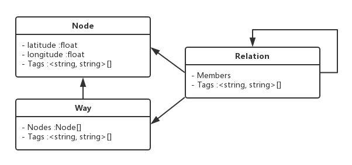
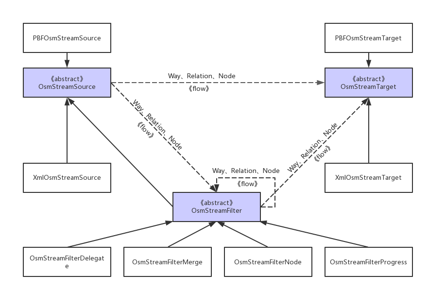
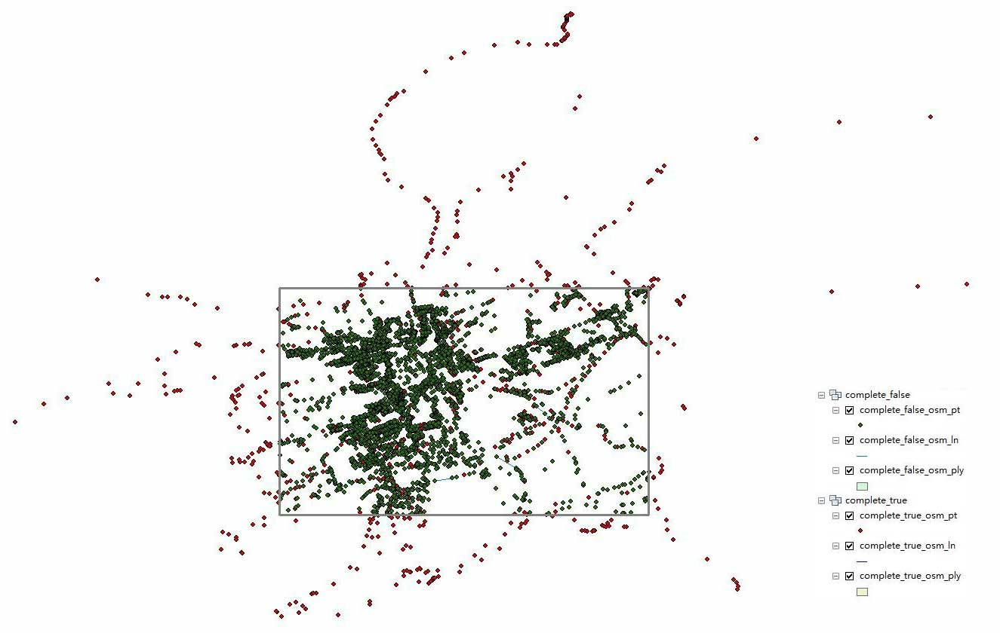
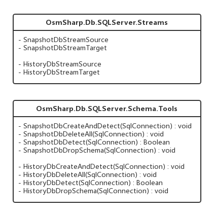
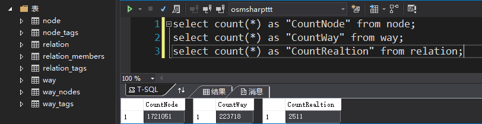
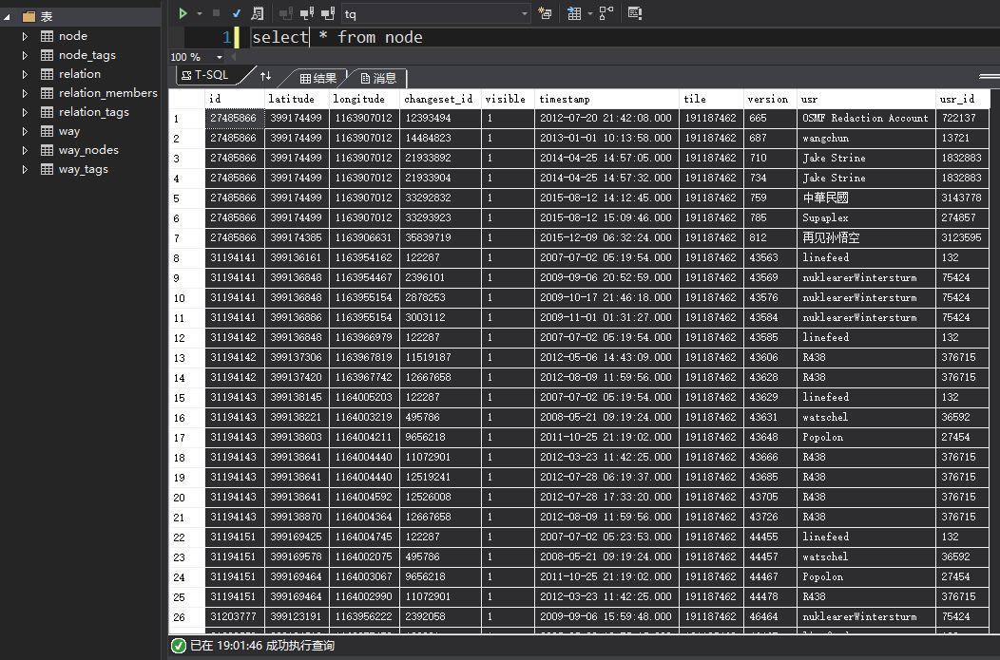
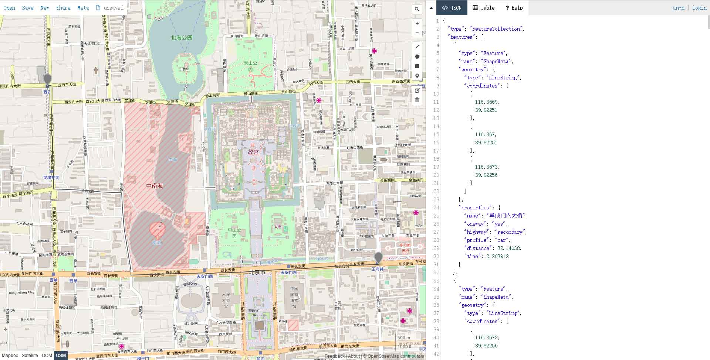

OsmSharp是一个基于.NET的OpenStreetMap(OSM)库。
本文对OsmSharp做了简单的介绍，并使用OsmSharp对OSM数据做了常用的数据处理、数据库的存储和应用（路径规划），提供了一些关键代码。
OpenStreetMap数据模型
OSM数据有三个基本对象：Node，Way，Relation。更多信息请查看OSM-wiki。

OsmSharp介绍
OsmSharp可以在直接.NET中使用OSM数据，其主要功能有：
- Read/Write OSM-XML.
- Read/Write OSM-PBF.
- Streamed architecture, minimal memory footprint.
- Convert a stream of native OSM objects to ‘complete’ OSM objects: Ways with all their actual nodes, Relations with all members instantiated.
- Convert OSM objects to geometries.
协作项目
OsmSharp做过与地图相关的很多事情：路径规划、数据处理、渲染矢量数据。下面是OsmSharp与.NET平台的协作项目：
- NetTopologySuite(NTS)：一个地理库，可以将其与OsmSharp.Geo一起使用，将OSM数据转换为shapefile或过滤一些数据将其转换为GeoJSON。
- ltinero：.NET的路径规划项目。OsmSharp.Routing作为OsmSharp的一部分，现更名为ltinero。
- Mapsui：Mapsui是WPF，Xamarin.Android，Xamarin.iOS和UWP应用程序的.NET Map组件。
流模型(Streaming Model)
OsmSharp使用流模型处理OSM数据。所有流模型都实现了泛型IEnumerable<T>接口，这就意味着可以使用LINQ查询处理。

- OsmStreamSource：
XmlOsmStreamSource：读OSM-XML文件
PBFOsmStreamSource：读OSM-PBF文件 - OsmStreamTarget：
XmlOsmStreamTarget：写OSM-XML文件
PBFOsmStreamTarget：写OSM-PBF文件 - OsmStreamFilter：
OsmStreamFilterDelegate
OsmStreamFilterMerge
OsmStreamFilterNode
OsmStreamFilterProgress
读OSM-PBF文件
luxembourg-latest.osm.pbf1
2
3
4
5
6
7
8
9
10
11
12
13
14
15
16
17
18
19
20
21
22// 读取"luxembourg-latest.osm.pbf"的node、way、relation个数
// 创建StreamSource
var source = new PBFOsmStreamSource(File.OpenRead("luxembourg-latest.osm.pbf"));
int nodes = 0, ways = 0, relations = 0;
foreach (var osmGeo in source)
{
if (osmGeo.Type == OsmGeoType.Node)
{
nodes++;
}
if (osmGeo.Type == OsmGeoType.Way)
{
ways++;
}
if (osmGeo.Type == OsmGeoType.Relation)
{
relations++;
}
}
Console.WriteLine("There are {0} nodes, {1} ways, {2} relations.", nodes, ways, relations);
// 输出：There are 1721051 nodes, 223718 ways, 2511 relations.
LINQ查询过滤数据
1 | // 创建StreamSource |
写入OSM-XML文件
1 | // 创建StreamSource |
打开”filtered.osm”文件可查看内容，如下：1
2
3
4
5
6
7
8
9
10
11
12
13
14
15
16
17
18
19
20
21
22
23
24
25
26
27
28
29
30
31
32
33
34
35<?xml version="1.0" encoding="UTF-8"?>
<osm version="0.6" generator="OsmSharp">
<node id="25922353" lat="49.50871" lon="6.010775" user="Stilmant Michael" uid="26290" visible="true" version="36766" changeset="9218254" timestamp="2011-09-05T14:27:47Z">
<tag k="highway" v="crossing" />
<tag k="crossing" v="uncontrolled" />
</node>
<node id="245921260" lat="49.60019" lon="6.124797" user="Stilmant Michael" uid="26290" visible="true" version="10362" changeset="44411" timestamp="2008-02-05T12:37:48Z" />
<node id="245923096" lat="49.5063" lon="6.013138" user="Stilmant Michael" uid="26290" visible="true" version="10516" changeset="9218254" timestamp="2011-09-05T14:27:46Z">
<tag k="highway" v="crossing" />
<tag k="crossing" v="uncontrolled" />
</node>
<node id="245923278" lat="49.50129" lon="6.014411" user="Stilmant Michael" uid="26290" visible="true" version="10557" changeset="44411" timestamp="2008-02-05T12:57:49Z" />
<node id="245923344" lat="49.49693" lon="6.009622" user="Stilmant Michael" uid="26290" visible="true" version="10571" changeset="44411" timestamp="2008-02-05T12:59:12Z" />
<node id="245923345" lat="49.49725" lon="6.009501" user="Stilmant Michael" uid="26290" visible="true" version="10572" changeset="44411" timestamp="2008-02-05T12:59:12Z" />
<!-- 略 -->
<way id="22921571" user="Stilmant Michael" uid="26290" visible="true" version="1" changeset="87062" timestamp="2008-02-09T16:29:01Z">
<nd ref="246813086" />
<nd ref="246813087" />
<nd ref="246813088" />
<nd ref="246813089" />
<tag k="foot" v="yes" />
<tag k="highway" v="footway" />
<tag k="created_by" v="Potlatch 0.7" />
</way>
<way id="22921581" user="Stilmant Michael" uid="26290" visible="true" version="2" changeset="87062" timestamp="2008-02-09T16:31:20Z">
<nd ref="246813139" />
<nd ref="246813140" />
<nd ref="246813141" />
<nd ref="246813142" />
<nd ref="246813139" />
<tag k="amenity" v="parking" />
<tag k="created_by" v="Potlatch 0.7" />
</way>
<!-- 略 -->
</osm>
常用数据处理
裁剪
以下两种过滤方法可实现裁剪。
- FilterBox(float left, float top, float right, float bottom，bool completeWays)
- FilterSpatial(IPolygon polygon, bool completeWays)
其中，FilterBox()以边框过滤，需设置左、上、右、下的经纬度。FilterSpatial()以ploygon裁剪，保留polygon以内的所有对象，该方法需要引用OsmSharp.Geo。completeWays默认为false，true和false的区别如下图。（红色为设置为true的结果，绿色为设置为false的结果）

示例：
1 | using (var fileStreamSource = File.OpenRead("luxembourg-latest.osm.pbf")) |
GetPolygonFromGeoJson(string fileName)方法如下，需添加以下引用。1
2
3using GeoAPI.Geometries;
using NetTopologySuite.Features;
using Newtonsoft.Json;
1 | /// <summary> |
数据库操作
SQLServer
OsmSharp-GitHub上有两种方式从/向SQL Server数据库读取/写入OSM数据。
OsmSharp.Db.SQLServer.dll
使用sqlserver-dataprovider软件包，以SQL Server作为OpenStreetMap数据库。从/向SQL Server数据库读取/写入OSM数据。需添加引用”OsmSharp.Db.SQLServer.dll”，最新的GitHub上找不到这个文件，我上传到自己的GitHub了，点击即可下载。

向SQL Server数据库写入OSM数据
实时数据(Snapshot)和历史数据(History)的插入方法一致，只是数据表的结构不一样。具体的数据表结构请查看GitHub中的SQL语句。
历史数据(History*)的导入，会因为id重复，而导致导入数据失败！！！
1 | // 连接字符串 |
输出的日志：1
2
3
4
5
6
7
8
9
10
11
12
13
14
15
16
17
18
19[Schema.Tools-2017/5/12 13:32:47]:information - Delete all data in snapshot database schema...
[SnapshotDbStreamTarget-2017/5/12 13:32:53]:information - Inserting 1000000 records into node.
[SnapshotDbStreamTarget-2017/5/12 13:33:14]:information - Inserting 80777 records into node_tags.
[SnapshotDbStreamTarget-2017/5/12 13:33:22]:information - Inserting 100000 records into way.
[SnapshotDbStreamTarget-2017/5/12 13:33:23]:information - Inserting 354601 records into way_tags.
[SnapshotDbStreamTarget-2017/5/12 13:33:28]:information - Inserting 1122157 records into way_nodes.
[SnapshotDbStreamTarget-2017/5/12 13:33:43]:information - Inserting 100000 records into way.
[SnapshotDbStreamTarget-2017/5/12 13:33:44]:information - Inserting 256525 records into way_tags.
[SnapshotDbStreamTarget-2017/5/12 13:33:47]:information - Inserting 888866 records into way_nodes.
[SnapshotDbStreamTarget-2017/5/12 13:33:59]:information - Flushing remaining data...
[SnapshotDbStreamTarget-2017/5/12 13:33:59]:information - Inserting 721051 records into node.
[SnapshotDbStreamTarget-2017/5/12 13:34:15]:information - Inserting 55585 records into node_tags.
[SnapshotDbStreamTarget-2017/5/12 13:34:16]:information - Inserting 23718 records into way.
[SnapshotDbStreamTarget-2017/5/12 13:34:16]:information - Inserting 52142 records into way_tags.
[SnapshotDbStreamTarget-2017/5/12 13:34:16]:information - Inserting 282298 records into way_nodes.
[SnapshotDbStreamTarget-2017/5/12 13:34:19]:information - Inserting 2511 records into relation.
[SnapshotDbStreamTarget-2017/5/12 13:34:20]:information - Inserting 14759 records into relation_tags.
[SnapshotDbStreamTarget-2017/5/12 13:34:20]:information - Inserting 146095 records into relation_members.
[SnapshotDbStreamTarget-2017/5/12 13:34:22]:information - Database connection closed.
实时数据的表结构和插入后的数据如下图：

从SQL Server数据库中读取OSM数据
1 | // 连接字符串 |
OsmSharp.Data.SQLServer.dll
使用data-providers软件包，可以下载“OsmSharp.Data.SQLServer.dll”文件，添加引用，也可以用NuGet搜索“OsmSharp.SQLServer”安装。
最好使用NuGet安装，这样会自动添加对应版本的OsmSharp库，否则可能出现某种问题。以下是本文所对应的版本号。
1 | <packages> |
SQL Server数据库写入OSM数据
history.pbf
OsmSharp.Data.SQLServer.dll并没有对id作限制，因此有重复id的历史数据也可以直接写入数据库中。1
2
3
4
5
6
7
8
9
10
11
12
13
14
15
16
17
18
19
20string conStr = "Server=*;Database=*;User Id=*;Password=*;MultipleActiveResultSets=true;";
using (var connection = new SqlConnection(conStr))
{
connection.Open();
// 删除原有数据表
SQLServerSchemaTools.Remove(connection);
// 创建数据表
SQLServerSchemaTools.CreateAndDetect(connection);
// 实时数据
// using (Stream stream = File.OpenRead("luxembourg-latest.osm.pbf"))
// 历史数据
using (Stream stream = File.OpenRead("history.pbf"))
{
var source = new PBFOsmStreamSource(stream);
var target = new SQLServerOsmStreamTarget(connection);
// 插入数据
target.RegisterSource(source);
target.Pull();
}
}
下图是历史数据写入的结果，可以看到有重复的id。

SQL Server数据库读取OSM数据
OsmSharp.Data.SQLServer.dll好像并不能从SQL Server数据库中读取OSM数据。
路径规划
Itinero
ltinero：.NET的路径规划项目。
- Itinero.IO.OSM：使用OSM数据
- Itinero.IO.Shape：使用shapefile
- Itinero.IO.Geo：使用NTS
关键类：RouterDb，Router，Profiles 和 RouterPoint
- RouterDb: Manages the data of one routing network. It holds all data in RAM or uses a memory mapping strategy to load data on demand. It holds all the network geometry, meta data and topology.
- Router: The main facade for all routing functionality available. It will decide the best algorithm to use based on a combination of what’s requested and what data is available in the RouterDb.
- Profiles: Definitions of vehicle and their behaviour that can traverse the routing network.
- RouterPoint: A location on the routing network to use as a start or endpoint of a route. It’s defined by an edge-id and an offset-value uniquely identifying it’s location on the network.
示例
下面通过一个简单的示例介绍如何使用OSM数据做路径规划。
通过NuGet安装Itinero和Itinero.IO.OSM，添加引用
1 | using Itinero; |
加载OSM数据
1 | // 加载OSM数据 |
创建Router
1 | var router = new Router(routerDb); |
计算
1 | var route = router.Calculate(Vehicle.Car.Fastest(), new Coordinate(39.9225f, 116.3669f), new Coordinate(39.9066f, 116.4053f)); |
结果
1 | // route.TotalDistance; // 距离 |
将结果写入GeoJson文件后，添加到geojson.io，计算出的路径如下图

实际应用
上述示例对于小区域、城市或国家而言，没什么问题，但是当加载大面积数据时，请使用以下方法。
- 处理原始数据并写入磁盘。
- 从磁盘加载预处理的数据并将其用于路径规划。
加载原始数据
1 | var routerDb = new RouterDb(); |
将routerDb实例写入到磁盘：
1 | using (var stream = File.Create("osmfile.routing")) |
加载routerDb
1 | using (var stream = File.OpenRead("osmfile.routing")) |
计算
1 | var router = new Router(routerDb); |
更过关于路径规划的内容请参考Itinero-GitHub。